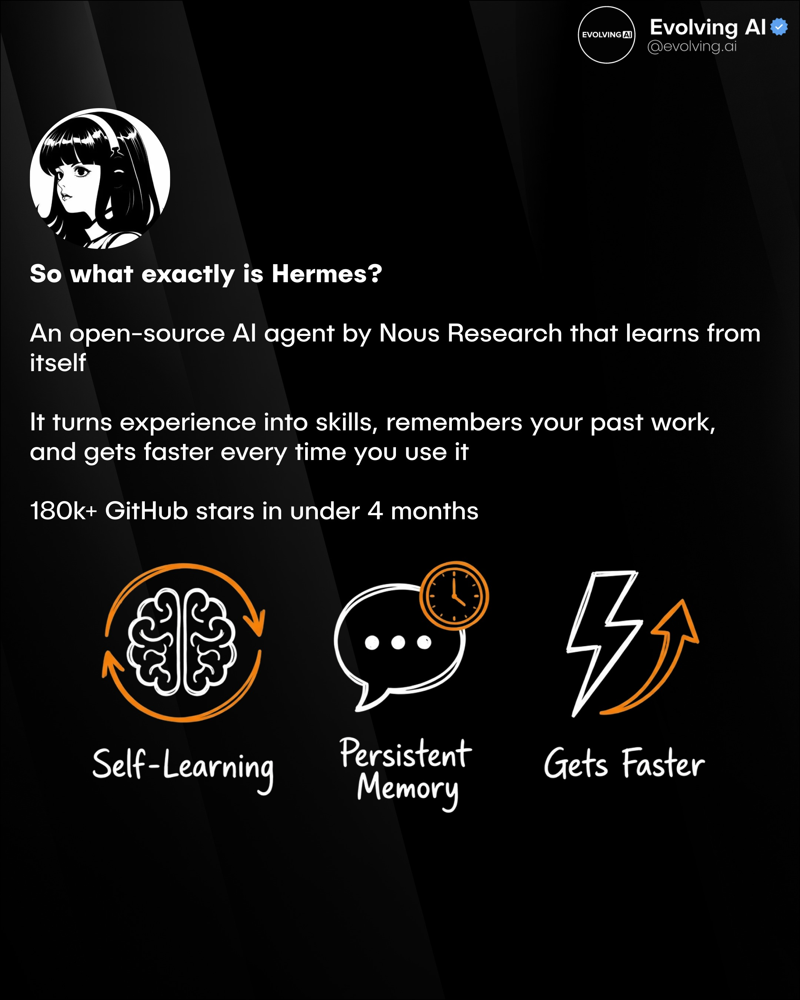
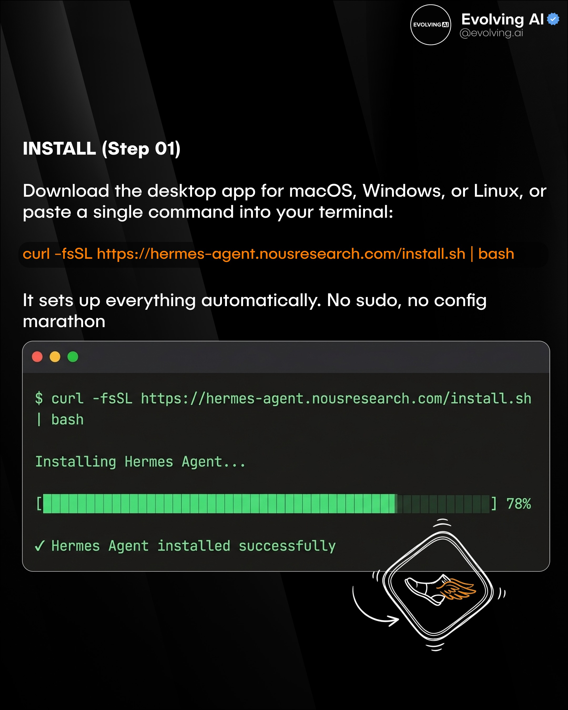
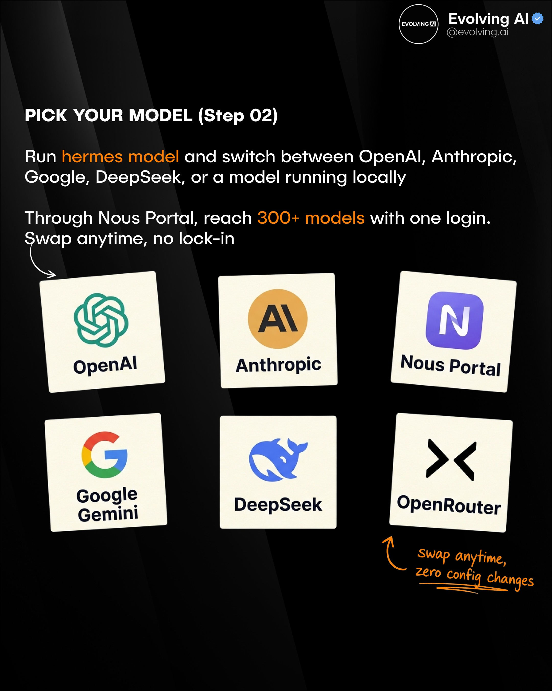
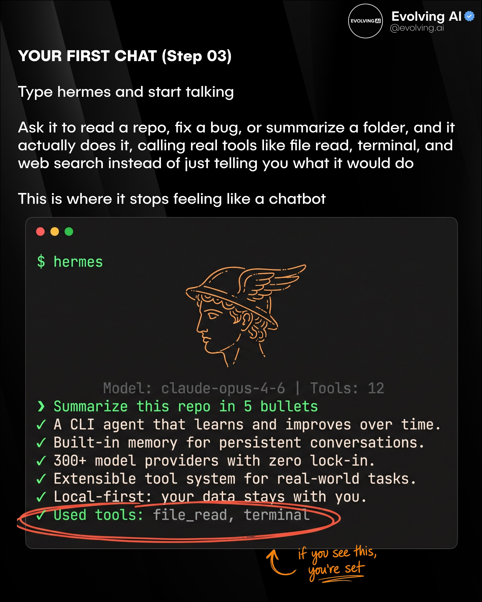
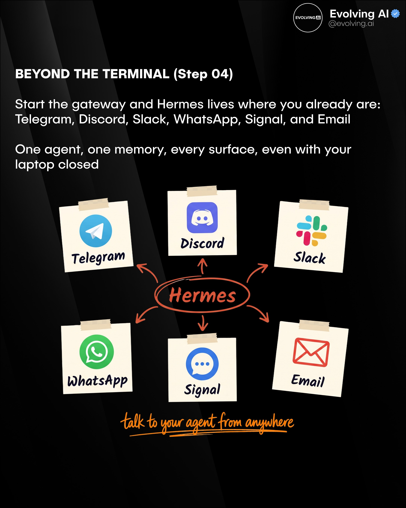
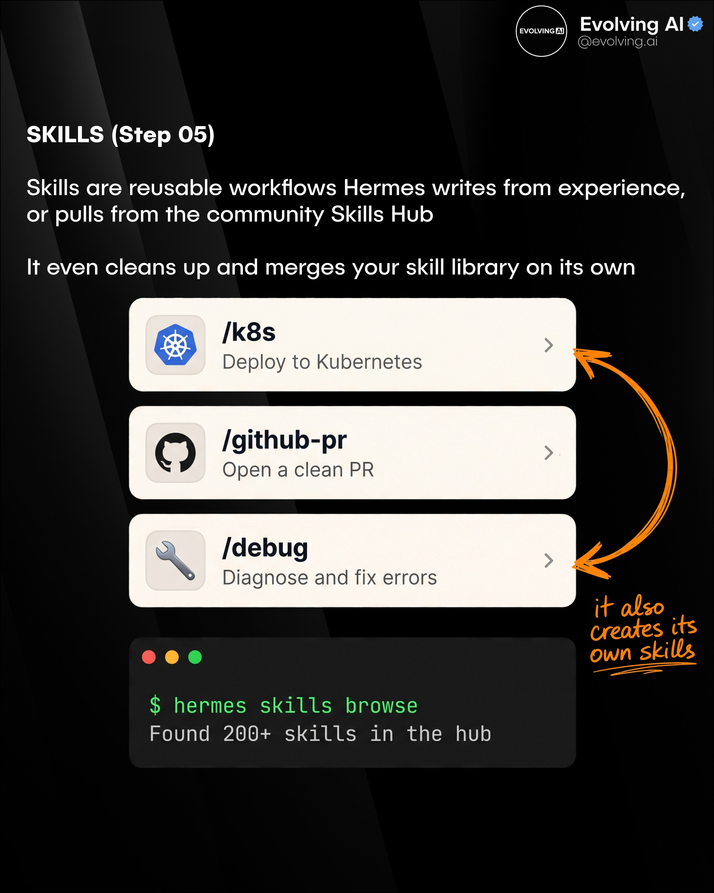
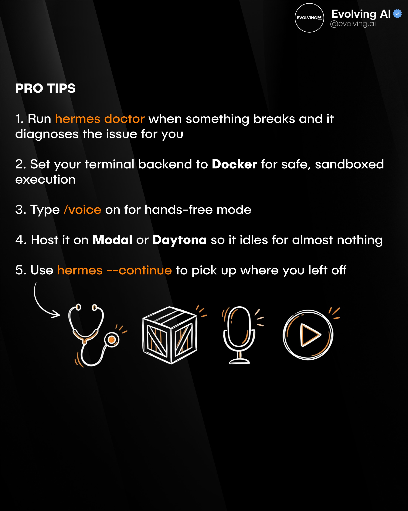
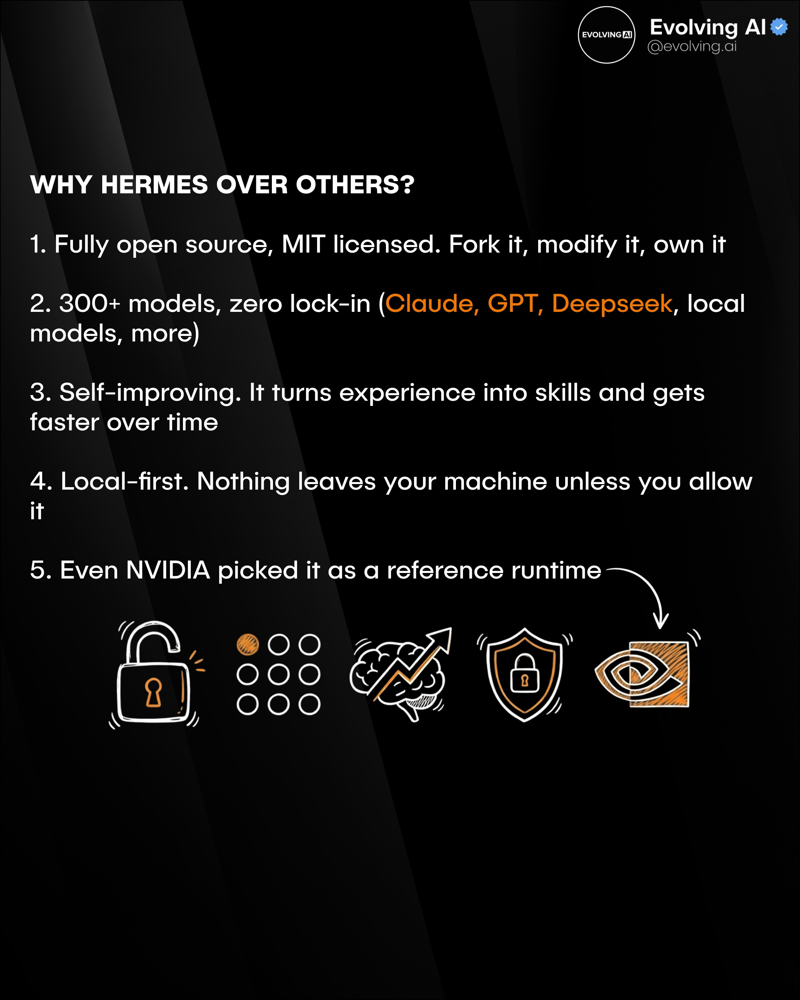

Instagram Post
An open-source AI agent just hit 180k GitHub stars in 4 months, and most...
carousel (10 slides) (enriched by ClaudeClaw)
Summary
COMPLETE GUIDE HERMES-AGENT EVOLVING AI THIS IS THE COMPL... | Evolving AI @evolving.ai So what exactly is Hermes? An op... | Evolving AI @evolving.ai INSTALL (Step 01) Download the d... | Evolving AI @evolving.ai PICK YOUR MODEL (Step 02) Run he... | Evolving AI @evolving.ai YOUR FIRST CHAT (Step 03) Type h... | Evolving AI @evolving.ai BEYOND THE TERMINAL (Step 04) St... | Evolving AI @evolvi...
Caption
⭐📈 An open-source AI agent just hit 180k GitHub stars in 4 months, and most people still haven't heard of it.
It's called Hermes Agent, built by Nous Research, and it's not just another chatbot. It learns from your work, builds its own reusable skills, and gets faster the more you use it. Even NVIDIA picked it as a reference runtime.
Here's how to set it up from scratch 👇
1. Install it with a single command (macOS, Windows, or Linux)
2. Pick your model, switch freely across 300+ via Nous Portal, with zero lock-in
3. Type hermes and start chatting, it actually runs real tools, not just talk
4. Go beyond the terminal: connect Telegram, Discord, Slack, WhatsApp, Signal & Email
5. Supercharge it with Skills, reusable workflows it learns, reuses, and even writes itself
Open source, local-first, MIT licensed. Your machine, your data.
You can check it out at github.com/NousResearch/hermes-agent
What are your thoughts on this? 💬🤔
—
➡️ If you want to keep up with all the AI news, useful tips, and important developments, join 100k+ subscribers reading our free newsletter
1
COMPLETE GUIDE HERMES-AGENT EVOLVING AI THIS IS THE COMPLETE GUIDE TO SETUP HERMES AGENT, THE NO.1 OPEN-SOURCE AI AGENT THAT QUIETLY EXPLODED ONLINE MEET HERMES, THE SELF-IMPROVING AGENT FROM NOUS RESEARCH
An anime-style character with headphones is depicted in black and white, surrounded by abstract digital interface elements, above a large text block on a black background promoting an AI agent.
2
Evolving AI @evolving.ai So what exactly is Hermes? An open-source AI agent by Nous Research that learns from itself It turns experience into skills, remembers your past work, and gets faster every time you use it 180k+ GitHub stars in under 4 months Self-Learning Persistent Memory Gets Faster
A social media post on a dark background explains "Hermes," an open-source AI agent, with text descriptions and three illustrative icons for "Self-Learning," "Persistent Memory," and "Gets Faster."
3
Evolving AI @evolving.ai INSTALL (Step 01) Download the desktop app for macOS, Windows, or Linux, or paste a single command into your terminal: curl -fsSL https://hermes-agent.nousresearch.com/install.sh | bash It sets up everything automatically. No sudo, no config marathon $ curl -fsSL https://hermes-agent.nousresearch.com/install.sh | bash Installing Hermes Agent... [ ] 78% ✓ Hermes Agent installed successfully
A dark-themed screen displays instructions for installing "Hermes Agent" using a terminal command, with a terminal window showing the installation progress and a success message, accompanied by a winged shoe icon.
4
Evolving AI @evolving.ai PICK YOUR MODEL (Step 02) Run hermes model and switch between OpenAI, Anthropic, Google, DeepSeek, or a model running locally Through Nous Portal, reach 300+ models with one login. Swap anytime, no lock-in OpenAI Anthropic Nous Portal Google Gemini DeepSeek OpenRouter swap anytime, zero config changes
An infographic on a dark background presents "PICK YOUR MODEL (Step 02)" with text instructions and six cards displaying logos and names of AI models like OpenAI, Anthropic, and Google Gemini, flanked by navigation arrows.
5
Evolving AI @evolving.ai YOUR FIRST CHAT (Step 03) Type hermes and start talking Ask it to read a repo, fix a bug, or summarize a folder, and it actually does it, calling real tools like file read, terminal, and web search instead of just telling you what it would do This is where it stops feeling like a chatbot $ hermes Model: claude-opus-4-6 | Tools: 12 > Summarize this repo in 5 bullets A CLI agent that learns and improves over time. Built-in memory for persistent conversations. 300+ model providers with zero lock-in. Extensible tool system for real-world tasks. Local-first: your data stays with you. Used tools: file_read, terminal if you see this, you're set
A dark-themed digital slide or screenshot presents instructions and features for an AI agent named Hermes, including a simulated command-line interface and a stylized drawing of the Greek god Hermes.
6
Evolving AI @evolving.ai BEYOND THE TERMINAL (Step 04) Start the gateway and Hermes lives where you already are: Telegram, Discord, Slack, WhatsApp, Signal, and Email One agent, one memory, every surface, even with your laptop closed Telegram Discord Slack Hermes WhatsApp Signal Email talk to your agent from anywhere
An infographic on a dark background displays "Hermes" as a central hub connected by arrows to six sticky notes representing various communication platforms like Telegram, Discord, and WhatsApp, accompanied by text explaining its function as an AI agent.
7
Evolving AI @evolving.ai SKILLS (Step 05) Skills are reusable workflows Hermes writes from experience, or pulls from the community Skills Hub It even cleans up and merges your skill library on its own /k8s Deploy to Kubernetes /github-pr Open a clean PR /debug Diagnose and fix errors it also creates its own skills $ hermes skills browse Found 200+ skills in the hub
A dark-themed digital slide or screen presents information about "Skills" in an AI system, featuring examples of technical skills like Kubernetes deployment and GitHub pull requests, alongside a command-line interface output.
8
Evolving AI @evolving.ai PRO TIPS 1. Run hermes doctor when something breaks and it diagnoses the issue for you 2. Set your terminal backend to Docker for safe, sandboxed execution 3. Type /voice on for hands-free mode 4. Host it on Modal or Daytona so it idles for almost nothing 5. Use hermes --continue to pick up where you left off
The image displays a list of five "PRO TIPS" in white text on a dark background, with five line-art icons (stethoscope, crate, microphone, play button) below the list, all featuring orange accents.
9
Evolving AI @evolving.ai WHY HERMES OVER OTHERS? 1. Fully open source, MIT licensed. Fork it, modify it, own it 2. 300+ models, zero lock-in (Claude, GPT, Deepseek, local models, more) 3. Self-improving. It turns experience into skills and gets faster over time 4. Local-first. Nothing leaves your machine unless you allow 5. Even NVIDIA picked it as a reference runtime
The image displays a dark-themed slide with white text listing five reasons "WHY HERMES OVER OTHERS?", accompanied by five hand-drawn icons representing concepts like security, models, intelligence, protection, and NVIDIA.
10
Join the #1 AI Newsletter in the world +100,000 readers Always free Learn to utilize AI for yourself Never miss a thing in AI Actionable insights No fluff EVOLVING AI INSIGHTS Keeping you ahead in AI, simplified. Welcome, AI enthusiasts Nvidia is set to invest up to $100 billion in OpenAI, fueling the creation of next-gen data centers to power advanced AI models. The deal even includes a plan to deliver 10 gigawatts of Nvidia systems. Let's dive in! SUBSCRIBE FOR FREE NVIDIA & OPENAI Nvidia pours $100B into OpenAI NVIDIA @nvidia · Follow X ICYMI: @OpenAI and NVIDIA have announced a historic partnership to deploy 10 gigawatts of AI infrastructure featuring millions of NVIDIA Vera Rubin Link in bio Subscribe for FREE
A robotic hand holds a smartphone displaying an AI newsletter, with promotional text on the left and various tech company logos in the background.
All slides







